提出期限：1月26日正午
解答上の注意
・特に指定のないかぎり，テキストと同様の記号を用いること。
・解答だけでなく，その計算過程や考え方も示すこと。
・解答には下線を引くなどわかりやすく示すこと。
1. 年収が3で，効用関数が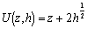の家計を考える。ここで，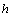は住宅であり，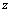はそれ以外の消費財すべてを表す合成財である。1単位当たりの価格は住宅と消費財の双方とも1である。
① この家計の最適な消費選択を求め，最適解での効用水準を求めよ。
② 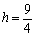の公共住宅が年間1の家賃で提供されたときの効用水準を求めよ。
③ 公共住宅の供給費用が民間の住宅と同じ（つまり，1単位当たり1の費用）の場合に，上の公共住宅につぎ込む政府補助と同額の所得補助を行ったときの効用水準を求めよ。また，公共住宅の場合と同じ効用水準にするために必要な所得補助の金額を求めよ。
④ 家賃の50%の住宅補助が与えられたときの家計の消費選択を求め，最適解での効用水準を求めよ。また，この効用水準を達成するために必要な所得補助額を求め，住宅補助金の額と比較せよ。
2. 借地借家法がないときには， 年後の年間家賃が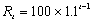万円となるはずの借家を考える。この借家について，借地借家法により，継続家賃の値上げがまったく不可能となった場合について，以下の問いに答えよ。ここで，家主にとっての割引率はゼロであり，家主は借家人が入居後2年で借家を出ていくと考えているとする。
年後の年間家賃が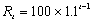万円となるはずの借家を考える。この借家について，借地借家法により，継続家賃の値上げがまったく不可能となった場合について，以下の問いに答えよ。ここで，家主にとっての割引率はゼロであり，家主は借家人が入居後2年で借家を出ていくと考えているとする。
① 家主が借地借家法がないときと同じだけの家賃収入を見込めるように新規家賃を設定するとすると新規家賃はいくらになるか。まず，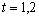での新規家賃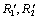を求めたうえで，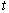年後の新規家賃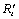がどうなるか示せ。
② 借家人が家主の見込みと異なり，入居後1年で借家を出る場合，借家人は借地借家法のない場合に比べ，いくら得（損）をするか求めよ。（現在時点（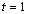の期首）で入居したと考えて計算せよ。）
③ 借家人が入居後3年で借家を出る場合は，借家人は借地借家法のない場合に比べ，いくら得（損）をするか求めよ。（現在時点（の期首）で入居したと考えて計算せよ。）
3. 都市の人口を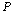,国全体の人口を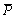として，都市の当初（生産性向上前）の効用曲線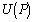，都市の生産性向上後の効用曲線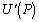，その他の地域の効用曲線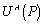が以下の図のように表されるとする。
① 都市の生産性が向上する前について，市場均衡となりうる都市人口をすべて挙げよ。（人口移動は自由でコストがかからないと仮定して答えよ。以下の②も同様とする。）また，これらの均衡から少し外れるとどちらの方向に人口移動が起きるのかを調べることによって，安定的な均衡はどれで，不安定な均衡はどれかを示せ。
② 都市の生産性が向上し，都市の効用曲線がからにシフトしたとしよう。当初の都市人口が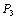のとき，生産性向上後の都市人口はどの水準に決まるか。その理由も簡単に述べよ。
③ これまでは，人口移動の費用を無視してきたが，ここでは，人口移動の費用を考えることにしよう。人口移動の費用が，都市人口にかかわらず，効用に換算して図の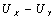の大きさだけかかるとする。当初，都市人口がで，都市，その他の地域ともに効用水準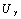であったが，都市の生産性の向上にともない効用曲線がにシフトした場合，都市人口，都市の効用水準，その他の地域の効用水準はどのような水準に決まるか，図を用いて示せ。（必要な場合には補助線などを用いてもよい。）